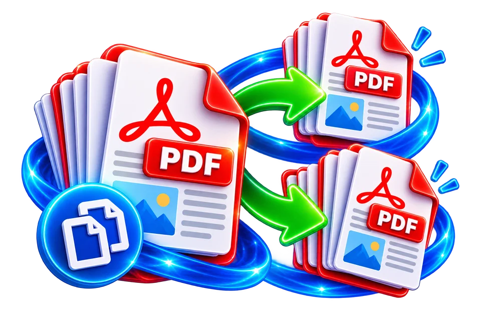

Select the PDF and page to copy
Duplicate a form page and verify the new copy appears in the intended position.
Duplicate selected pages in a PDF.
Copying a page helps create repeated forms or layouts, but page numbers and references may need manual attention.

Duplicate a form page and verify the new copy appears in the intended position.
Repeat a form or template page in a PDF.
Verify the duplicated pages appear in the intended order.
Duplicate a form page and verify the new copy appears in the intended position.
Duplicate an existing empty form page to prepare multiple paper copies. The cloned page may still contain the same visible form number or date.
Use the real tool above to verify the result. The example illustrates the workflow, not a guaranteed outcome.
Duplicate an existing empty form page to prepare multiple paper copies. The cloned page may still contain the same visible form number or date.
Check page order and any interactive form-field behaviour. Duplicate visual content is not guaranteed to give each page unique field identities.
Duplicating a PDF page copies an existing page into the document so it appears more than once. This is useful when a worksheet or blank form needs extra copies. If an eight-page file has page 4 duplicated once, the output normally contains nine pages. The relative location of the copy matters: inserting it next to the original differs from appending it at the end. Preview the planned order, especially when page labels, instructions or answer sheets depend on adjacency.
A common use case is repeating a blank checklist page within a field report. Copying a fully completed checklist instead would also copy visible answers, which may be inappropriate. Check whether the source contains form fields; duplicated interactive widgets can share identifiers or values depending on the PDF library and implementation. A duplicated page that looks right visually may still have linked form controls that need special attention. Test any checkboxes or text fields before distributing the result as a fillable template.
Duplicating a page does not generate new unique invoice numbers, page numbers or dates unless another feature explicitly changes them. If the original footer says "Page 4 of 8", the duplicate may display the same printed text even though its position in the output changed. This can confuse readers. For formal documents, add or update page numbers after the structural duplication where supported. Likewise, a digital signature covering the original document can be invalidated by modification.
For scanned records, the duplicated page is another copy of the same raster image. It does not improve resolution or create searchable text. If you need an additional blank template rather than a copy of confidential completed information, use the correct source page. File size can increase because extra page objects are written, though internal resource sharing may make the growth less than the original page size.
After processing, compare the output's page count with the planned number of copies. Inspect each insertion point and verify that pages following the duplication remain in the intended sequence. If the source has bookmarks or links, test representative entries. Keep the original PDF because duplicating the wrong source page can be awkward to undo after several later edits. For print jobs, preview double-sided pagination; inserting one page can shift which content appears on facing sheets.
Suppose a two-page handout needs a second copy of its blank answer sheet. Duplicating page 2 may generate pages 1, 2, 2-copy, but the copied page could contain annotations, hyperlinks or form fields, depending on how the engine copies PDF objects. Two identically named interactive fields may behave unexpectedly in some readers. Check both original and duplicated pages before distributing the file. Printed page numbers copied into the artwork will also be duplicated, even if the PDF positions differ. This workflow is useful for repeating templates, but for uniquely numbered answer sheets it may be better to regenerate the form from its editable source.
A training handout might need two copies of the same exercise sheet in one PDF. Duplicating that page creates another page containing the same visible material, but it does not necessarily create independent form field names or new unique document identifiers. If the source contains interactive forms, duplicated widget references can behave differently across PDF viewers. Printed numbers, watermarks and references are also copied unchanged. Preview the new page order and count before saving; a document with pages 1, 2, 2, 3 is not the same as a four-page document with newly numbered pages 1 through 4.
Not necessarily. Inspect any numbering or fields in the exported document.
Not always. PDF forms can share field names or values, so inspect behaviour before expecting independent entries.
No. A static contents list and printed references typically remain as they were.
No. It copies existing image data and any original defects rather than capturing new information.